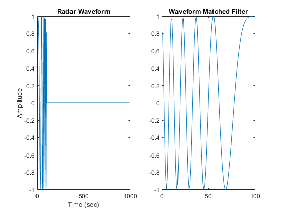
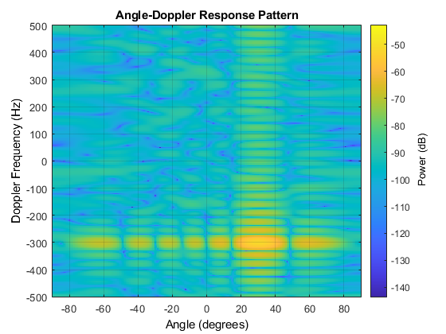

Contents
% RadarCubePart2.m % This program processes a radar datacube using functions from Phased Array % System Toolbox. The program first creates a radar datacube for a single % target at 20 km distance, 30 degree azimuth and 150 m/sec velocity. The % program then performs beamforming, matched filtering and Doppler % Processing to determine the target's distance and velocity. % Copyright 2015, The MathWorks, Inc. % Target Specs TgtModel=phased.RadarTarget; tgtpos=[10e3*sqrt(3);10e3;0]; % Target at 20 km distance, 30 degree azimuth tgtvel=[75*sqrt(3);75;0]; % Radial velocity is 150 m/sec % ULA Specs antenna=phased.ULA; antenna.NumElements = 8; cosineElement = phased.CosineAntennaElement; antenna.Element = cosineElement; % Waveform Specs waveform=phased.LinearFMWaveform; waveform.PRF=1000; waveform.PulseWidth=1e-4; prf = waveform.PRF; nSamples = waveform.SampleRate/prf; % Transmitter Specs TX=phased.Transmitter('Gain',20); % Platform Specs PlatformModel=phased.Platform; PlatformModel.InitialPosition = tgtpos; PlatformModel.Velocity = tgtvel; % Channel Specs ChannelModel = phased.FreeSpace; ChannelModel.TwoWayPropagation=true; % Tx ans Rx Specs txArray = phased.Radiator(... 'Sensor',antenna,... 'OperatingFrequency',300e6); rxArray = phased.Collector(... 'Sensor',antenna,... 'OperatingFrequency',300e6); rxPreamp = phased.ReceiverPreamp('Gain',10,'NoiseFigure',5); % Variable definitions radarPos = [0;0;0]; radarVel = [0;0;0]; nPulses = 32; tgtAng = zeros(2,nPulses); tgtAngcopy = zeros(2,nPulses); datacube = complex(zeros(nSamples,antenna.NumElements,nPulses));
Generate radar pulses
for ii=1:nPulses wf=step(waveform); % Generate waveform [tgtPos, tgtVel] = step(PlatformModel,1/prf); % Update target position [tgtRng, tgtAng] = rangeangle(tgtPos, radarPos); % Calculate range/angle to target tgtAngcopy(:,ii)=tgtAng; s0 = step(TX, wf); % Amplify signal s1 = step(txArray,s0, tgtAng); % Radiate the signal from the array s2 = step(ChannelModel, s0, radarPos, tgtPos, radarVel, tgtVel); % Propagate from radar to target and return s3 = step(TgtModel, s2); % Reflect signal from Target s4 = step(rxArray,s3,tgtAng); % Receive the signal at the array s5 = step(rxPreamp,s4); % Add rx noise datacube(:,:,ii) = s5(:,:); % Build data cube 1 pulse at a time end figure; t = (0:nPulses*nSamples-1)/waveform.SampleRate; y = abs(datacube(:,1,:)); plot(t,y(:));title('Reflected Target Return (One Channel)'); xlabel('Time (sec)'); ylabel('Magnitude')

Perform beamforming
Beamformer Specs
beamformer=phased.PhaseShiftBeamformer; beamformer.SensorArray=antenna; beamformer.DirectionSource='Input port'; beamformer.WeightsOutputPort=true; beamformer.WeightsNormalization='Preserve power'; [bf0,w0]=step(beamformer,datacube(:,:,1),[0;0]); [bf, w]=step(beamformer,datacube(:,:,1),[30;0]); figure; subplot(2,2,1); pattern(antenna,300e6,-180:180,0,... 'PropagationSpeed',physconst('LightSpeed'),'Normalize',false,... 'Type','powerdb','CoordinateSystem','rectangular'); subplot(2,2,2);plot(abs(bf0)); title('Sum Of Receive Elements'); xlabel('Time (msec)'); subplot(2,2,3);pattern(antenna,300e6,-180:180,0,'Weights',w,... 'PropagationSpeed',physconst('LightSpeed'),'Normalize',false,... 'Type','powerdb','CoordinateSystem','rectangular'); subplot(2,2,4);plot(abs(bf)); title('Beamformed Return (30 degree steering)'); xlabel('Time (msec)');
Beamform for all 32 pulses
beamformed=complex(zeros(nSamples,nPulses)); for ii=1:nPulses beamformed(:,ii)=step(beamformer,squeeze(datacube(:,:,ii)),tgtAngcopy(:,ii)); end figure; t = (0:nPulses*nSamples-1)/waveform.SampleRate; y = abs(reshape(beamformed,nPulses*nSamples,1)); dc=abs(reshape(datacube(:,1,:),nPulses*nSamples,1)); subplot(2,1,1);plot(t,dc);title('Single Channel Target Return'); xlabel('Time (sec)'); ylabel('Magnitude') subplot(2,1,2);plot(t,y);title('Beamformed Target Return'); xlabel('Time (sec)'); ylabel('Magnitude')

Perform matched filtering
b = getMatchedFilter(waveform); matchedfilter = phased.MatchedFilter('Coefficients',b,'SpectrumWindow','Hamming'); matchFiltered = step(matchedfilter,beamformed); figure; subplot(1,2,1);plot(real(wf));title('Radar Waveform'); xlabel('Time (sec)'); ylabel('Amplitude') subplot(1,2,2);plot(real(b));title('Waveform Matched Filter'); figure; t = (0:nSamples-1)/waveform.SampleRate; subplot(1,2,1);plot(t,abs(bf)); title('Beamformed Return (30 degree steering)') subplot(1,2,2);plot(t,abs(matchFiltered(:,nPulses/2)));title('Pulse Compressed Return'); xlabel('Time (sec)'); ylabel('Magnitude')


Find range bin where detected peak occurs
[m,ind] = max(abs(matchFiltered(:,nPulses/2))); % ind is the range bin where the max amplitude occurs for the middle pulse
targetRange = time2range((ind-length(b)-1)/waveform.SampleRate, beamformer.PropagationSpeed)
targetRange = 1.9936e+04
Perform doppler processing
dopplered = fftshift(fft(beamformed(ind,:).')); % Take the fft at the max amplitude range bin lambda=beamformer.PropagationSpeed/beamformer.OperatingFrequency; h5 = figure; f = (-prf/2:prf/nPulses:prf/2-prf/64); v = f*lambda/2; plot(v,abs(dopplered)); title('Doppler Processing'); xlabel('Target Speed (m/s)'); ylabel('Magnitude'); annotation(h5,'textbox',... [0.142657579062161 0.836671802773498 0.151671755725191 0.0647149460708782],... 'String',strcat('Range = ',num2str(targetRange),'m'),... 'FitBoxToText','on');

Doppler Processing Using RangeDopplerResponse
Use the RangeDopplerResopnse object to display target range and speed
figure; rangeDoppler=phased.RangeDopplerResponse; rangeDoppler.DopplerOutput='Speed'; plotResponse(rangeDoppler,beamformed,b) ylabel('Range (km)');

Doppler Processing Using AngleDopplerResponse
First apply matched filter to each receive channel
matched = complex(zeros(nSamples,nPulses,antenna.NumElements)); for ii=1:antenna.NumElements for jj=1:nPulses matched(:,jj,ii) = filter(b,1,datacube(:,ii,jj)); end end % Now use the AngleDopplerResponse object to display Target Angle and % Dopppler frequency shift dd = squeeze(matched(ind,:,:)).'; angleDopplerResp = phased.AngleDopplerResponse('SensorArray',antenna,... 'OperatingFrequency',3e8, ... 'PropagationSpeed',physconst('LightSpeed'),... 'PRF',prf, 'ElevationAngle',0); figure; plotResponse(angleDopplerResp,dd);


Complete